SECURElogBook está diseñado para ser muy fácil de usar, pero familiarizarse con algunas reglas clave te ayudará a desbloquear todo su potencial:
1. SECURElogBook divide el tiempo en minutos y te permite almacenar información en cada uno, ya sea en el pasado o en el futuro. En cada uno de esos minutos, puedes crear un registro, tarea, lista de compras o registrar un evento. Todo se almacenará en tu línea de tiempo, luego puedes usar el sistema de búsqueda para buscar o agrupar información y sacar conclusiones de ella.
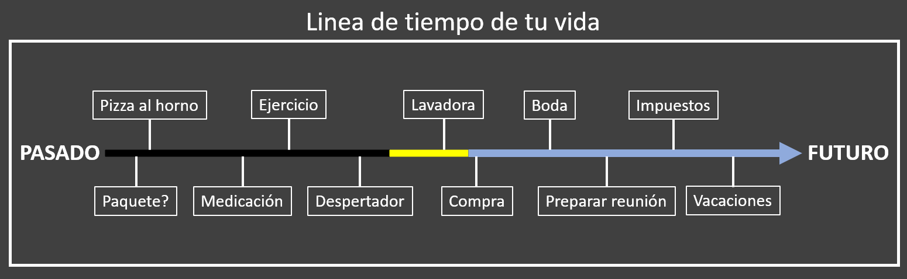
2. Esta línea de tiempo digital de tu vida puede contener miles de registros sin ningún problema. Tener una gran cantidad de registros en tu lista no es un problema para SECURElogBook. Por un lado, he creado una tecnología sólida que funciona incluso en teléfonos muy antiguos. Por otro lado, he incorporado funciones que te permiten gestionar tus registros y el tiempo de manera sencilla:
. Por defecto, la lista se centrará en el tiempo presente o en el lugar donde guardaste por última vez un registro sin cambiar su hora. Así, puedes seguir consultando una parte específica de tu lista si deseas revisar los registros en esa área. Esto es útil cuando te das cuenta de que tienes demasiadas cosas que hacer en un día en particular y deseas mover registros a otros días para reducir tu carga de trabajo.
. Si creamos un registro en el futuro o en el pasado, la posición de la lista no cambiará.
. Si guardas un registro y deseas encontrarlo rápidamente o realizar un cambio, puedes presionar este botón en la ventana principal (azul). Este botón te permitirá abrir el último registro guardado.
. La fecha en la ventana principal (con fondo azul) es un botón que te permite mover la lista al registro amarillo más cercano al presente. Si no hay registros amarillos, moverá la lista al presente para mostrar el próximo registro entrante.
. A menudo, es más rápido buscar un registro que pasar tiempo desplazándote por la lista. El sistema de búsqueda es fácil y rápido, y te ayudará a encontrar lo que estás buscando.
Finalmente, hay un lenguaje visual que facilitará aún más las cosas. Por eso, tener una lista con miles de registros no es un problema con SECURElogBook.
3. SECURElogBook es más que una simple lista de tareas. Es un registro personal para toda tu vida. Desde alarmas y listas de compras hasta comidas, entrenamientos, ideas… todo se almacena en una única lista infinita.
Imagínalo como una línea de tiempo donde puedes guardar eventos futuros (como alarmas y recordatorios) y pasados (como lo que comiste o hiciste). A medida que pasa el tiempo, los eventos futuros también se convierten en registros del pasado. Todos serán registros en la línea de tiempo digital de tu vida, donde tú decides qué incluir.
Podrás buscar y analizar dentro de esta línea de tiempo digital de tu vida. Puedes encontrar información específica, identificar patrones y obtener conocimientos sobre ti mismo utilizando el sistema de búsqueda. Es como tener un asistente personal que te ayuda a recordarlo todo, aprender y crecer.
SECURElogBook te hará sentir mejor al proporcionarte un lugar confiable y 100% privado para almacenar tus recuerdos e información.
Finalmente, SECURElogBook te ayudará a ahorrar el recurso más valioso que todos tenemos, el tiempo, tanto dentro como fuera del trabajo.
4. Para gestionar la información, básicamente tenemos dos ventanas. Con SECURElogBook no necesitas borrar nada. Las alarmas, la ingesta de alimentos, los entrenamientos, las ideas, las listas de compras… un día, todo se convertirá en parte del pasado como registros en tu lista. Estos registros serán como nuestros recuerdos, pero puedes buscarlos o agruparlos para sacar conclusiones. La ventana principal (con fondo azul) te permite hacer eso.
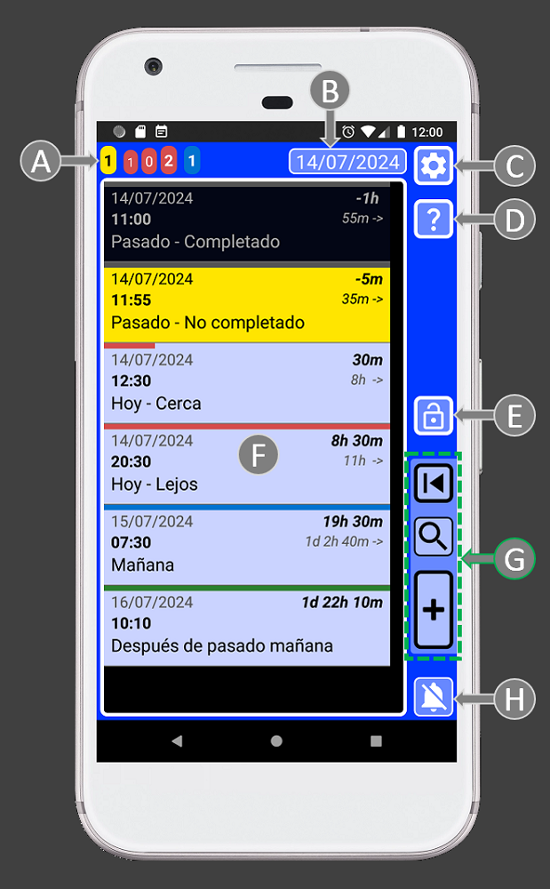
A = Los contadores de tareas son como un radar que te permite determinar tu carga de trabajo en diferentes momentos.
B = La fecha en la ventana principal es un botón que te permite mover la lista al registro amarillo más cercano al presente. Si no hay registros amarillos, se moverá la lista al presente para mostrar el próximo registro entrante. Los registros amarillos son recordatorios o alarmas que ocurrieron, pero aún no has revisado.
C = Configuración. Acceso a: PIN de seguridad, ajustes de audio, formato de fecha, sistema de eliminación de registros, sistema de importación/exportación y ventana de información.
D = Ayuda. Documentación de ayuda para esta ventana.
E = Botón de bloqueo de la aplicación.
F = Lista de registros. Aquí puedes encontrar todos tus datos. Toca un registro para editarlo. Los resultados de búsqueda también se mostrarán aquí.
G = Botones para manejar registros: abrir el último registro guardado, buscar y agregar registros.
H = Botón para detener la alarma.
Luego tenemos ventanas para crear y editar información. Nuestra información/registro está compuesto por: texto (A), tiempo (B) e información sobre si está o no completado (C). Por eso hay controles para ayudarte a manejar el texto (A), fíjate que están conectados con una línea. Para ayudarte a gestionar el tiempo, hay un área con controles dedicados a eso (B). Finalmente, para manejar otras cosas relacionadas con el registro, tenemos los botones de registro (C):
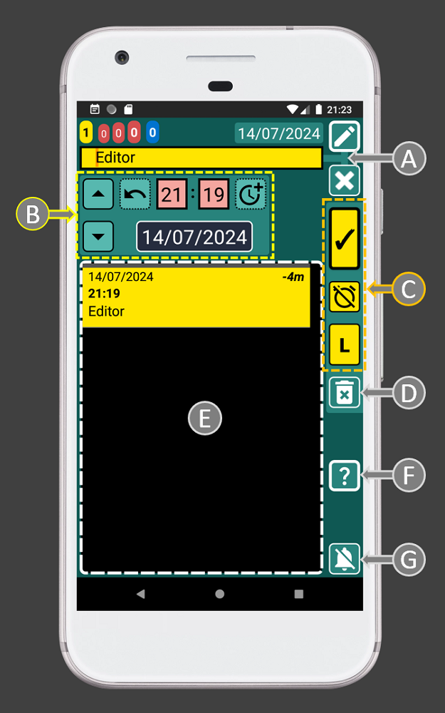
A = Área de texto donde puedes abrir tu menú favorito para seleccionar en lugar de escribir. Puedes cambiar el menú de favoritos según tus necesidades para hacer las cosas aún más rápidas.
B = Área de controles de tiempo.
C = Botones de registro: guardar, completado/no completado, Lista/Copia. El botón Lista se mostrará cuando editemos un registro y no hayamos cambiado su hora. Entonces podemos presionar el botón para agregar el texto y crear una lista. Si editamos un registro y cambiamos su hora, el botón “L” (lista) cambiará a “C” (copia). Esto permitirá crear una copia de ese registro cada vez que establezcamos una hora diferente y presionemos el botón “C”.
D = Eliminar el registro actual.
E = Lista de registros. Mantén presionado un registro para editarlo. Esta lista te ayudará a programar registros más fácilmente.
F = Ayuda. Documentación de ayuda para esta ventana.
G = Botón para detener la alarma.
Los botones de registro (C) son como una vista previa de cómo se verá el registro. Estos botones utilizan formato condicional para indicar, mediante colores, si el registro está programado para el futuro o el pasado. También indican si el registro está completado o no. Es como un semáforo, con una única luz, que utiliza colores para informarte si la tarea/registro está en el futuro o en el pasado y si lo hemos completado o no:
. Pasado:
Completado
. Futuro:
Completado
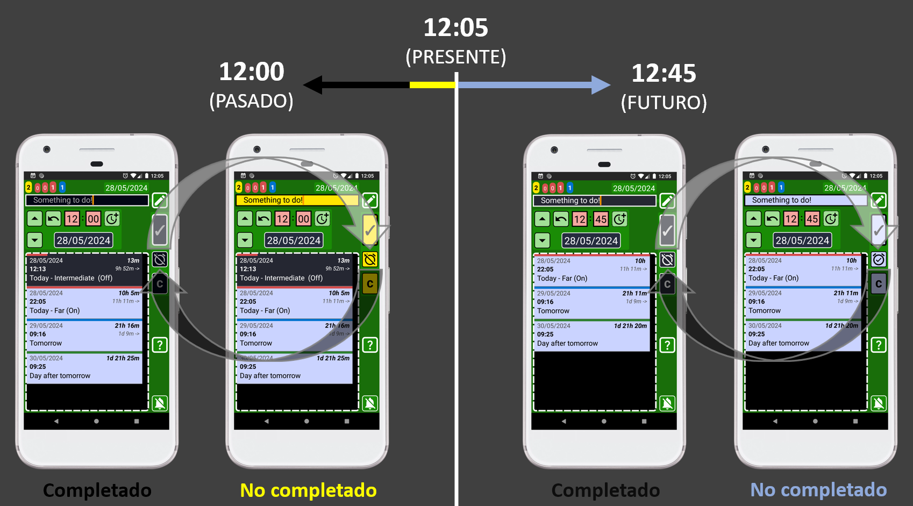
Gracias a este sistema de colores, será difícil cometer errores, ya que el color te ayudará a verificar si estás haciendo las cosas correctamente. Por ejemplo, si estás configurando una alarma para despertarte mañana, los botones de registro deben ser azules, ya que eso indica que el registro se grabará en el futuro con una alarma. Si los botones del registro no están en azul antes de guardar el registro, tienes un problema ya que no estás creando un registro con alarma (registro azul). Tal vez seleccionó una fecha/hora en el pasado o tal vez indicó que el alarma/registro está completado.
El sistema de código de colores automáticamente hace que los registros menos importantes sean menos visibles mientras resalta los importantes:
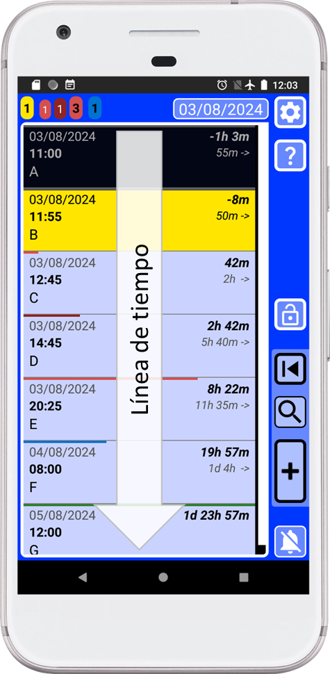
. Oscuro = Registros completados.
. Amarillo = Registros sin completar, que debes revisar lo antes posible.
. Azul = Registros futuros.
5. Puede presionar este botón , en la ventana principal (azul), para volver al último registro guardado/copiado.
6. Interfaz de usuario inteligente e intuitiva que reacciona cuando la usas para que todo sea más fácil y rápido. Cada botón proporciona animación y vibración al interactuar, confirmando la entrada del usuario y reduciendo la frustración por la posible falta de respuesta de la aplicación. La aplicación utiliza un lenguaje visual para comunicar claramente la función de cada control, eliminando malas experiencias y aumentando la confianza del usuario.
Las cajas de texto tienen esquinas cuadradas:
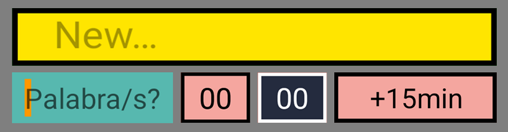
Los botones tienen esquinas redondeadas:
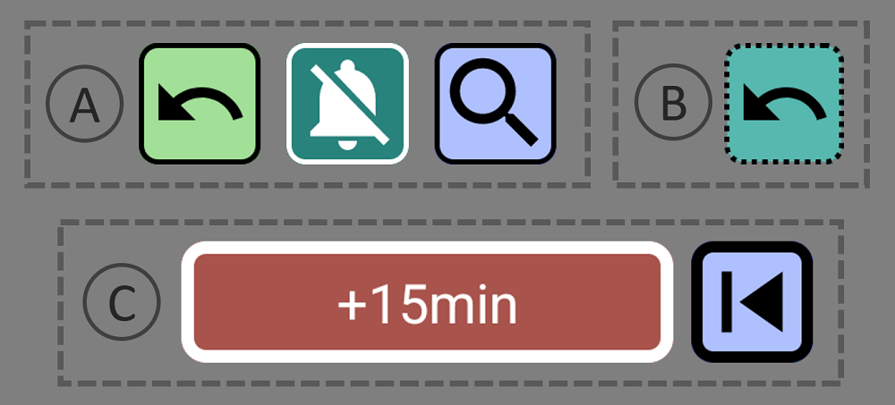
Si el botón tiene un borde delgado (A), la acción del botón ocurrirá en la misma ventana. Si la línea del borde es gruesa (C), eso significa que el botón abrirá una nueva ventana. Si la línea del borde del botón no es continua (B), eso significa que el botón tiene una acción al mantenerlo presionado.
7. La vida de un recordatorio/alarma siempre es la misma. Comienza como un registro azul (con alarma). Luego, cuando suena la alarma, el registro se volverá amarillo. Ahora se agregará al contador amarillo ya que la tarea no está completada. Una vez que completamos la tarea, al presionar el botón (I), la tarea/registro se volverá negro. Ahora esos datos pertenecen al pasado y podrás acceder a ellos usando el sistema de búsqueda.
8. La fecha en la ventana principal (con fondo azul) es un botón que le permite mover la lista al registro amarillo más cercano al presente. Si no hay registros amarillos, moverá la lista al presente para mostrar el siguiente registro entrante.
9. SECURElogBook te permite recordar todo, porque cuando agregas un recordatorio/registro (azul o amarillo), se resaltará y no podrás eliminarlo accidentalmente.
10. La pequeña lista con todos los registros (C) dentro de las ventanas del creador (verde) o del editor (azul verdoso) mostrará solo los registros que coincidan o sigan el momento seleccionado por la hora (11:55) y la fecha (14/07/2024) del registro que estamos editando (A).
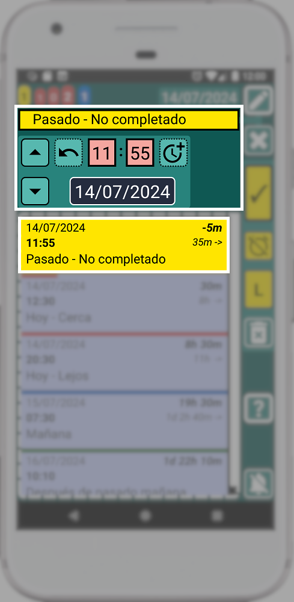
Esto significa que cada vez que cambie la hora o fecha, la lista (C) se actualizará para mostrar los registros establecidos en ese momento o después.
Además, cuando edites un registro (ventana azul verdoso), la lista con todos los registros (C) mostrará el mismo registro como el primer elemento de la lista (B). Esto se debe a que el primer registro (B) en la lista tiene la misma hora que el registro que estamos editando. Esto te permitirá editar el registro mientras aún puedes ver la información original.
11. Si editas un elemento de la lista, la pequeña lista con todos los registros mostrará toda la lista:
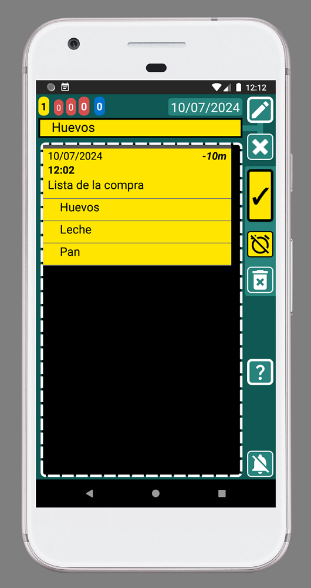
12. Cuando creas (ventana verde) o editas un registro (ventana azul verdoso) puedes mantener presionado cualquier registro dentro de la lista para abrir y editar ese registro. Eso hace que mover y programar tareas sea muy fácil:
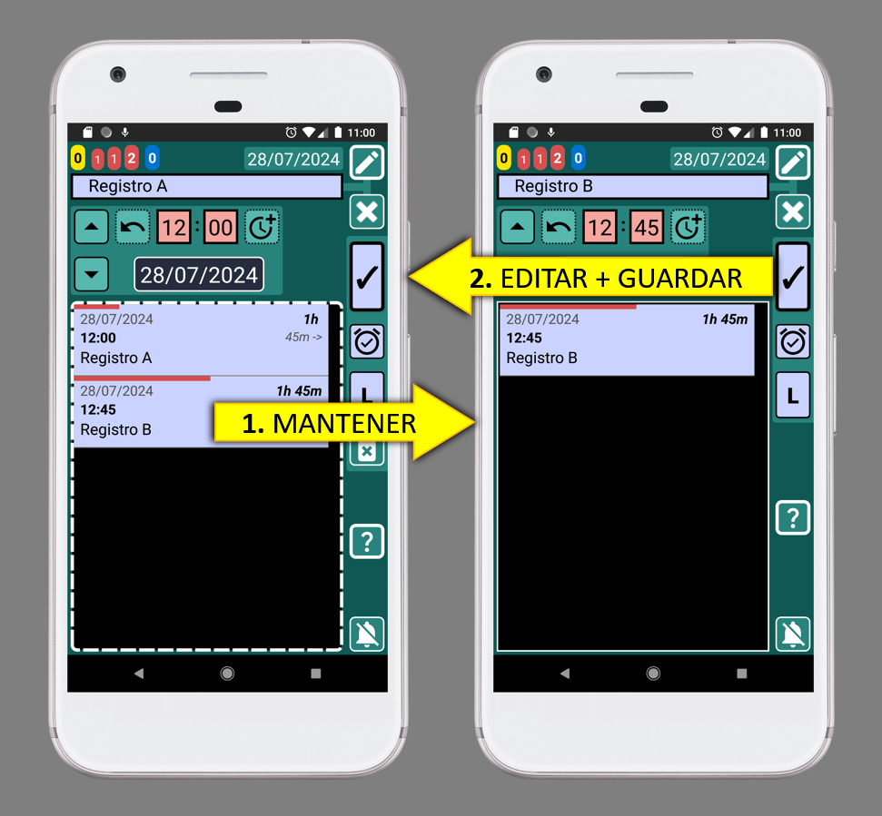
Si estás editando el “Registro A” (imagen de la izquierda) y notas que quieres cambiar algo en el “Registro B”, puedes abrirlo manteniendo presionado el “Registro B”. Después de realizar los cambios, puedes guardarlos y volver al “Registro A”.
13. Por defecto, la hora para un nuevo registro siempre (ventana verde) se establece con la hora actual.
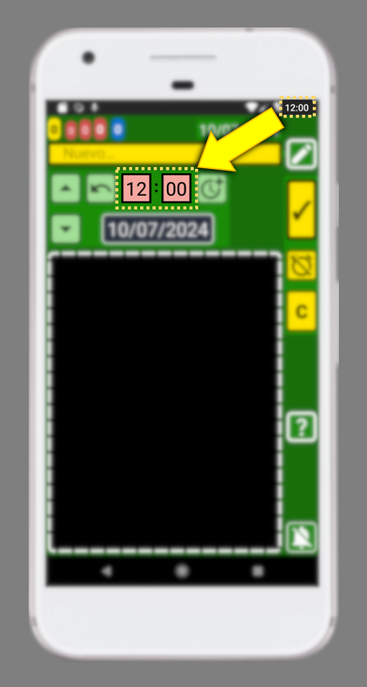
14. Cada registro muestra dinámicamente la diferencia de tiempo entre el registro actual y el presente (a la derecha, negrita), así como la diferencia de tiempo entre ese registro y el siguiente (a la derecha, marcado con una flecha). Con este conocimiento, planificar tu día es pan comido.

15. Puede hacer clic en los mensajes emergentes en la parte inferior de la ventana para cerrarlos.
16. Para crear varios registros rápidamente, es más rápido utilizar el botón copiar que crear cada registro de forma independiente. Eso significa que es más rápido crear el primer registro y presionar el botón copiar. Luego puedes cambiar el texto y la hora y presionar el botón copiar. Esto creará múltiples registros sin salir de la ventana. Además, este método utilizará el primer registro como referencia para la hora.
17. ¿Cómo acordarse de todo? Utilizo un recordatorio que aparece cada 3 horas para recordarme que agregue cosas. Cada vez que se activa el mensaje me hace preguntarme si me he olvidado de algo. Luego, si me olvidé algo, puedo agregarlo. Por último, adelanto el recordatorio añadiendo 3 horas más con 3 simples toques en la pantalla 😉
Cuanto más agregues a la aplicación, más podrá ayudarte.
La próxima vez que quieras recordar algo, puedes intentar recordarlo, o simplemente puedes usar la aplicación. ¡Con SECURElogBook, las ideas entran y las preocupaciones salen!
18. ¡Adelántate al futuro! Sí, SECURElogBook te lo recordará todo, pero no debes distraerte mientras conduces, estudias, haces ejercicio o estás en una reunión.
Puedes usar los contadores de tareas rojos en la parte superior izquierda para obtener una vista previa de su carga de trabajo. Si el primer rojo es 0 significa que no tienes alarmas en la próxima hora. Si el primer y segundo rojo son ambos 0, significa que tienes 8 h sin alarmas.

Los contadores de tareas, en la esquina superior izquierda de SECURElogBook, muestran el número de:
. Amarillo = Registros sin completar.
. Rojo (primero) = Registros en menos de 1h (registros con barra roja corta).
. Rojo (segundo) = Registros después de 1h y hasta 8h. (registros con barra roja a la mitad).
. Rojo (tercero) = Total de registros activos para hoy.
. Azul = Registros para mañana.
Es posible localizar fácilmente los registros que muestran los contadores de tareas:
. Contador amarillo => Registros amarillos.
. Contador rojo (primero) => Registros con barra roja corta.
. Contador rojo (segundo) => Registros con barra roja media.
. Contador azul => Registros con barra azul.
19. Los registros amarillos se muestran en los contadores de tareas, notificaciones y distintivo de la aplicación porque son muy importantes. Deberian revisarse al menos una o dos veces al día.
20. Recordatorios repetitivos. Gracias al funcionamiento de SECURElogBook, los recordatorios y alarmas son imposibles de ignorar porque no se pueden eliminar accidentalmente y se resaltan cuando se activan. Esto significa que no necesitas sobrecargar tu lista con registros, ya que, para acceder al siguiente recordatorio, siempre se activará primero el recordatorio anterior. En ese momento podrás hacer una copia o moverla con unos pocos toques en la pantalla.
SECURElogBook le permite crear manualmente recordatorios/alarmas que se repiten cada cierto tiempo.
Puedes mantener presionado este botón para agregar la hora/los días:
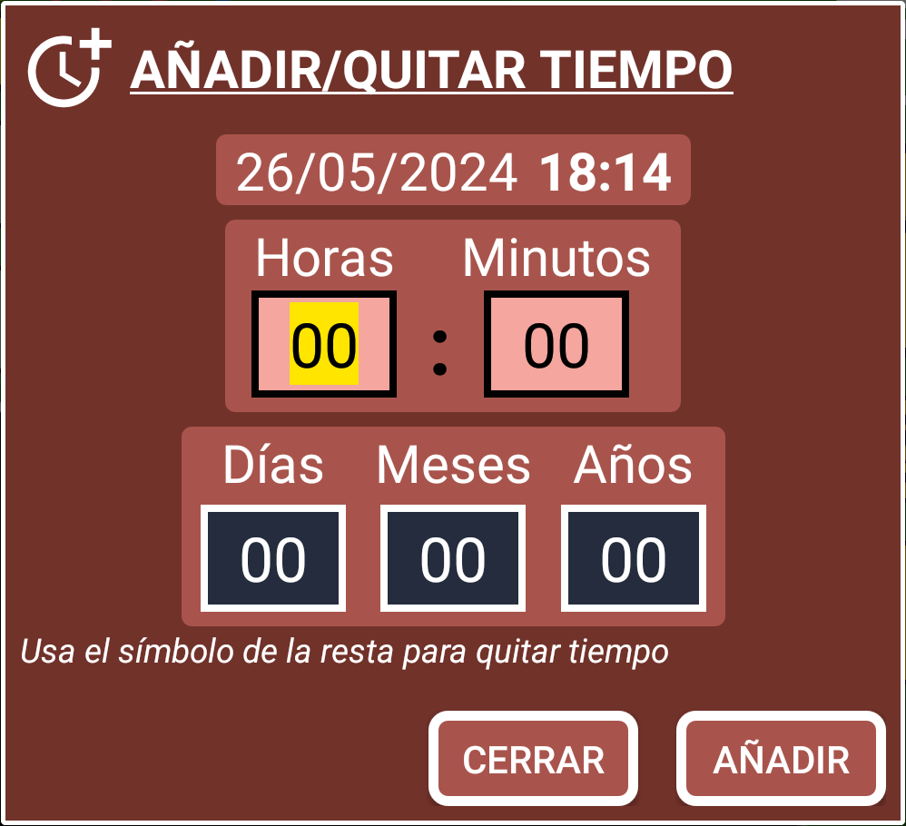
Luego puedes crea una copia del registro pulsando el botton "C" (copia).
¡Felicitaciones, ahora es un usuario avanzado de SECURElogBook!
Recuerde, cuanto más agregue y más sepa sobre la aplicación, ¡más le ayudara!